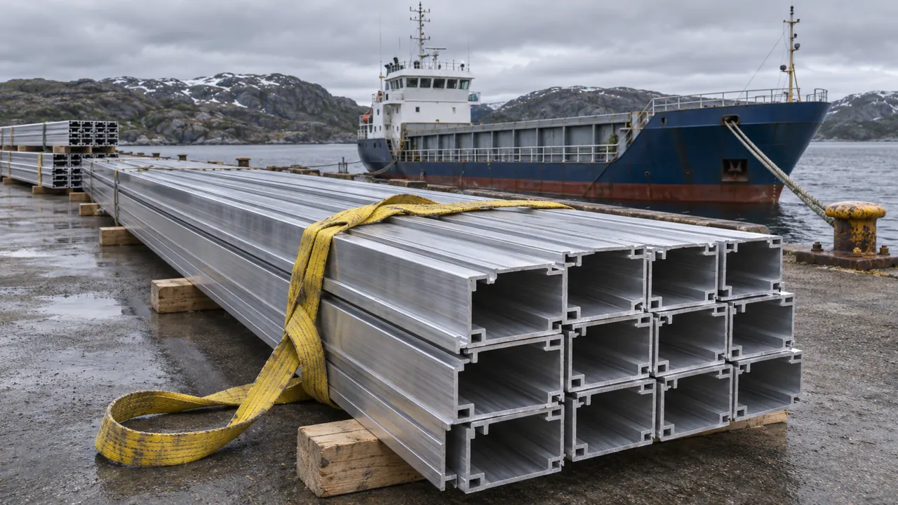

A buyer in Oslo orders aluminium profiles from a Turkish mill. Some will be delivered to Norway, some directly to a customer in Denmark. The purchasing team has allowed for the EU carbon border adjustment mechanism, or CBAM, on the Danish delivery. Should it now count the Norwegian delivery too? From January 2027 the answer depends on who imports the goods, which tariff lines they fall under and where they enter free circulation. The address on the purchase order answers none of those questions by itself.
The EEA Joint Committee adopted Decision 283/2026 on 25 September. The decision entered into force on 18 November, the day the European Commission announced the change. Norway and Iceland will apply the mechanism fully from 1 January 2027. The Commission's implementation notice, posted on 24 November, explains how an importer can operate across the three customs territories. Liechtenstein falls outside this extension. The distinction between entry into force and application matters for December contracts. A booking confirmed this winter can lead to a January import even when the vessel sails before New Year.
Follow the customs entry through the supply chain
Sketch the route on a blank sheet before asking the mill for emissions data. Put a dot wherever goods are released for free circulation, identify the legal person acting as importer and write the relevant commodity code alongside it. A Turkish loading port, a Norwegian billing address and an EU discharge terminal can all appear on documents for one sale. A port call or a change of truck does not by itself establish where the goods were released. Ask the customs representative to identify the procedure and obtain the corresponding entry reference.
A Dutch contractor commissioning a facade may buy extrusions through a Norwegian merchant. Suppose the contractor imports them from Türkiye directly into Rotterdam. The merchant's invoice and its home jurisdiction do not turn that movement into a Norwegian import. Now suppose the merchant buys the same material for its own account, first clears it in Bergen and later sells part of the cleared stock to the contractor. The second route requires a record connecting the onward delivery to the earlier release. Both contracts may use the same Turkish catalogue number.
Confirm product coverage against Annex I of the CBAM Regulation. Commercial language such as building supplies or fabricated metal conceals meaningful differences in tariff classification. Record the actual profile, composition, dimensions and manufacturing operation. Ask who approved the classification and when the technical description last changed. A mixed pallet may contain covered metal alongside unrelated hardware. Its gross shipping weight, including packing, can overstate the relevant quantity. Retain the itemised net mass behind the customs declaration.
Add the qualifying tonnes for the same importer
From January the annual fifty-tonne threshold for covered goods in the aluminium, iron and steel, cement and fertiliser sectors is applied across imports into the EU, Norway and Iceland together. Electricity and hydrogen have no mass exemption. Check every qualifying sector for the same importer. A purchasing dashboard limited to Turkish suppliers will miss relevant goods of other covered origins. The destination of the finished building tells you little about which entity entered the material.
Take one Norwegian legal entity that expects to import twenty tonnes of covered Turkish extrusions into Norway, eighteen into Denmark and fifteen into Iceland during 2027. Assume separate first releases, qualifying origin and no other exemption. Its projected total is fifty-three tonnes. Once the importer exceeds the limit, the regulation covers the qualifying imports for that calendar year, including the earlier tonnes. Every country manager could accurately report a local figure below fifty while headquarters still needs to plan for authorisation. If the Icelandic customer will import for its own account, ask for the contractual and customs evidence before assigning those fifteen tonnes to either company.
A workable forecast names a person who can stop a booking. Give that person a report showing actual releases, outstanding orders, estimated deliveries and uncertain classifications in separate columns. A projected total of forty-seven tonnes leaves little room for a replacement lot or an urgent purchase from another mill. Put cancellations back into the forecast only after the broker or supplier confirms the change. An invoice reversal can clear the accounts while the original customs event remains in the annual history.
Link the authorisation to the correct business identifiers
Mutual recognition means that an authorisation issued in one participating territory can serve the same operator across the new area. The local customs systems still identify that operator differently. An EU declaration uses an EORI number. Norwegian entries use the organisation number and Icelandic entries use the national identification number, known as a kennitala. A corporate group with similar trading names should check the full registered name, jurisdiction and identifier on each instruction to its broker.
For a Norwegian or Icelandic operator declaring covered goods to EU customs from January, the Commission explains that the national identifier must be recorded as the third-country unique identification number in its EORI record. The relevant field is commonly abbreviated TCUIN. Find the EU authority that issued the EORI and ask it to correct a missing or inaccurate entry. Quoting both numbers on an invoice does not update the registration. A business importing exclusively into Norway or Iceland has no need to obtain an EORI solely for that activity.
Consider a Norwegian buyer that changed its trading name after a restructuring. Its logistics agent has the current EORI, but the enterprise number saved in a broker's template belongs to a former affiliate. Ask the authority to confirm which records are linked, capture the acknowledgement and update the agent's instructions. Have the employee responsible for the first January clearance identify the evidence on screen. Discovering the mismatch before loading leaves time to correct it without paying quay storage or rearranging an installation crew.
Decide when to apply and who can act
A Norwegian or Icelandic operator can start its application following entry into force in November. The Commission instructs affected operators to apply before importing through the Authorisation Management Module of the registry. Its implementation notice describes transitional treatment for applicants in those states who submit by 31 March 2027 and are awaiting a decision. Build the timetable around the first planned import. Save the dated acknowledgement and the name of the competent authority handling the application. A diary entry for March gives the receiving broker no evidence of submission.
Allocate responsibility for registry access, application preparation and correspondence. Check whether the person who can log in also has authority to submit on behalf of the correct company. Arrange cover for the Christmas shutdown. A freight forwarder may be able to complete a customs declaration while lacking the authority or information to take on the CBAM role. Mutual recognition deals with CBAM authorisation. The customs representation rules applicable to the destination still require their own assessment.
Prove a previous release before a second border crossing
The November notice addresses qualifying third-country goods already released into free circulation and already subject to CBAM at that first release. From January, the relief for a subsequent release within the common area depends on those facts. For an EU entry following release in Norway or Iceland, the notice identifies TARIC code Y423. The declarant must be able to produce the evidence when lodging the declaration. Obtain local confirmation of the corresponding declaration arrangements for movements in the opposite direction.
Suppose a warehouse receives twelve bundles of identical Turkish profiles in Trondheim. Eight have been cleared in Norway. Four remain under customs control. A Swedish customer orders six bundles for immediate dispatch. Paint colour and profile length cannot distinguish the two stocks. Give every bundle a warehouse identifier linked to the original release document, receipt date and quantity. Pick six from the cleared stock, retain the dispatch allocation and reconcile the balance. If the warehouse has already mixed the consignments, resolve the evidence gap with the declarant before claiming the treatment.
Inward processing deserves a separate question. A Turkish input admitted under that procedure and subsequently incorporated into a finished article has a different history from stock cleared for free circulation. The notice addresses processed products and discusses further implementing measures. Give the adviser the original tariff code, the processing authorisation, a description of the operation and the planned destination. Avoid copying an instruction for cleared profiles onto a consignment of machined assemblies merely because it travels on the same ferry.
Ask the Turkish supplier for evidence it actually controls
A Turkish producer can identify its installation, production period, batch, net output and the route from its premises to the exporter. It ordinarily has less visibility over the importer's running total across three territories. Assign each question to the party holding the relevant records. A distributor buying from more than one plant should preserve the link between particular bundles and their source. An average for the seller's entire business may prevent the buyer from identifying the evidence supporting a particular delivery.
Build a short annex to the supply agreement. Specify when the mill must notify the buyer of a substituted producer, revised profile or split shipment. Designate a secure recipient for commercially sensitive figures, agree who answers verification queries and name an alternate during holidays. A purchase clause promising all information required by law gives the procurement coordinator very little to check on dispatch day. A specified document, recipient and delivery date make a missing file visible before the truck leaves.
Reconcile a shipment that moves across year end
Imagine that bad weather closes a Norwegian berth. The carrier proposes unloading in Gothenburg on 2 January instead of Bergen on 30 December. Ask whether the Swedish port will handle transit or a release, who will lodge the declaration and whether the buyer's registration matches the revised route. Revisit the year allocated to the forecast using the actual customs event. Preserve the carrier's diversion notice and the broker's response together so the finance team can reconstruct why the consignment changed reporting period.
Split responsibility for the close of each month. Logistics reconciles customs entry references to receipts, finance investigates discrepancies in quantities, and the compliance lead reviews approaching thresholds and unresolved exceptions. A useful exception report might show one consignment with a missing Norwegian identifier, another with no proof of its earlier release and a third awaiting classification of accessory brackets. Those three items call for different decisions. Sending the same generic reminder to every Turkish supplier leaves the person able to resolve each question unaware of the problem.
A board approving the next purchasing season can ask for three figures at the same meeting. How many qualifying tonnes have already been imported by this legal entity, how many are committed on open orders and how many depend on a disputed classification or uncertain destination? Attach the main assumptions and identify the first shipment at risk. That gives directors a concrete choice about authorisation, resources and delivery promises while there is still time to change the contract.
Trace a correction back to the affected deliveries
A Norwegian fabricator might learn in February that a Turkish packer transposed two bundle numbers. One bundle went to an Icelandic greenhouse project and the other to a Danish railway depot. Before replacing a spreadsheet, preserve the superseded version. Obtain a signed packing correction, weighbridge tickets and photographs of the stamped ends. Match those details against delivery notes acknowledged by each consignee. Ask the respective filing agents which declarations or supporting schedules require amendment. Record their replies against the affected lines.
If one contractor has already passed the material to a subcontractor, request a receipt identifying which lengths were cut and which offcuts remain on site. Document any uncertainty explicitly. Give accounting a short explanation of the variance, tell customer service which orders need clarification and retain the date on which each recipient acknowledged the correction. This approach lets an independent reviewer follow the chain even after the purchasing clerk who arranged the original shipment has moved to a different role.
Frequently asked questions
Does the buyer get a separate fifty-tonne allowance in each territory?
From January 2027 the same importer combines relevant first imports across the EU, Norway and Iceland for the annual threshold.
Which evidence matters when Turkish stock moves from Norway to the EU?
Link the onward shipment to earlier Norwegian release for free circulation and prior CBAM treatment. The EU declarant needs the supporting evidence when using code Y423.